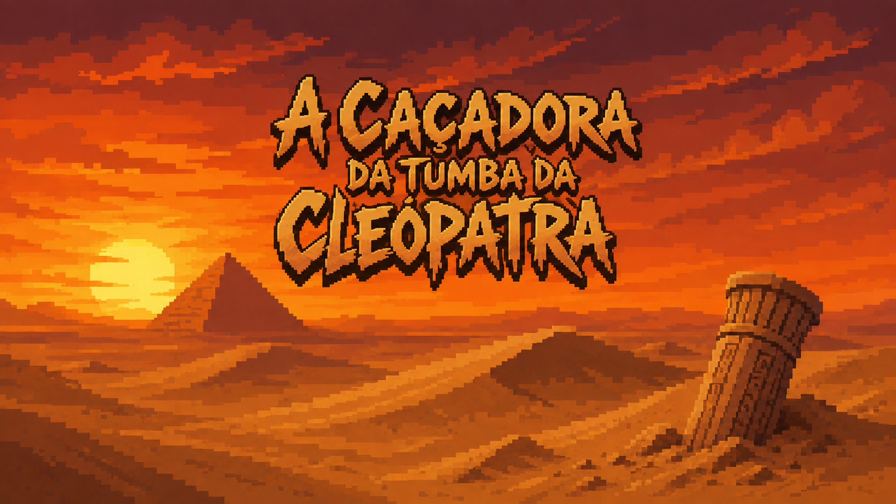
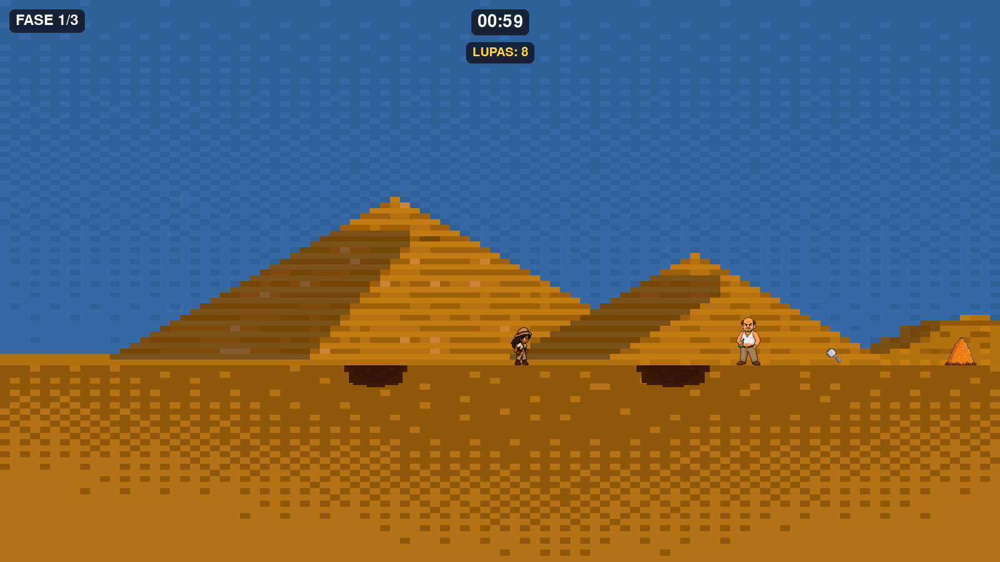

O nosso jogo
A Caçadora da Tumba da Cleopátra
Uma jornada eletrizante de plataforma e arqueologia pelas areias do Egito!
Sobre o jogo
Prepare-se para embarcar em uma aventura monumental no coração do Deserto do Saara! Em A Caçadora da Tumba de Cleópatra, você assume o papel de uma corajosa historiadora que precisa desafiar o tempo, os perigos do deserto e as barreiras de uma sociedade preconceituosa para desvendar um mistério de milhares de anos.
Sua missão é correr contra o relógio para localizar a lendária tumba de Cleópatra. Mas a jornada não será fácil: além dos perigos naturais da região, vilões como Luiz Ângelo, Gabriel e Elias farão de tudo para impedir seus avanços. Inspirado pela trajetória da arqueóloga Kathleen Martinez, o jogo resgata o valor das mulheres na ciência em uma narrativa marcada pelo empoderamento, superação e paixão pela história.

Como funciona a Gameplay:
O jogo combina a nostalgia dos grandes clássicos com elementos pedagógicos dinâmicos, garantindo uma experiência acessível e envolvente do início ao fim:
Mecânica de Plataforma Clássica: Corra, salte sobre fendas profundas, desvie de pedras e navegue por terrenos acidentados no deserto.
Saltos: Supere os inimigos ao longo do caminho utilizando o salto preciso sobre a cabeça dos adversários para eliminá-los e abrir caminho pelas fases.
Checkpoints Educativos (Quizzes): O progresso não depende apenas de habilidade motora, mas também de conhecimento! Para avançar entre as seções do mapa, o jogador deve responder a desafios em formato de quiz.

Destaques
Aprendizado pela Ambientação: Em vez de textos longos e exaustivos, a história e o aprendizado acontecem através da observação do ambiente. As Pirâmides de Gizé, as ruínas e os detalhes do cenário contam a trajetória do Egito Antigo de forma visual e memorável.
Diversão em Primeiro Lugar: A estrutura de plataforma entrega uma fórmula simples, eficiente e comprovada no mercado de videogames. É um jogo fácil de aprender, mas desafiador o suficiente para prender a atenção do início ao fim.
Estética e Trilha Sonora Autorais (8-Bit): Toda a arte visual foi desenvolvida em pixel art, criando uma atmosfera retrô acolhedora e rica em detalhes. A trilha sonora original combina instrumentos egípcios tradicionais, arranjos orquestrais e sintetizadores em escalas egípcias para transmitir mistério e tensão a cada etapa.
Protagonização Científica Feminina: Diferente da maioria dos jogos de plataforma tradicionais, o projeto coloca no centro da ação a inspiração de uma historiadora e cientista, promovendo representatividade de gênero em um meio dominado por heróis convencionais.